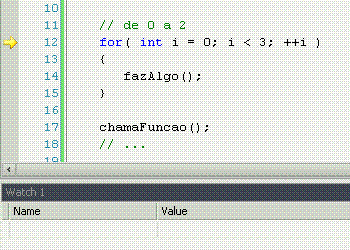

- Tédio
- Debug da BIOS com o SoftIce 16 bits
- Cronogramas
- História do Windows - parte 5.0
- Engenharia reversa para principiantes
- A Linguagem de Programação C: O Livro
- Guia básico para programadores de primeiro int main
- Por que minha DLL travou?
- Guia básico para programadores de primeiro breakpoint
- Typeid e os perigos do não-polimorfismo
- Proteção dos membros protected
- Brincando com o WinDbg (alterando mensagem de erro no Bloco de Notas / Notepad)
# Tédio
Caloni, 2007-10-01 <quotes> <self> <now> [up] [copy]O tédio é um movimento de energia condicionada dentro de você.
Tolle, Eckhart (O Poder do Agora, 1997)
# Debug da BIOS com o SoftIce 16 bits
Caloni, 2007-10-02 <computer> [up] [copy]Para quem acha que ainda não desceu demais o nível existe um ótimo artigo no Code Project de S. Z. Keller (aka ShalomZ) sobre como construir seu próprio sistema operacional. É simples, direta e empolgante a maneira com que ele explica e trata os detalhes básicos, desde quando o computador é ligado até quando o boot loader carrega e entrega o controle de execução. Eu mesmo fiz o teste com a imagem que foi disponibilizada para download e funcionou direitinho. Agora esse meu artigo se dispõe a explicar como você pode fazer para depurar o processo de load do seu primeiro sistema operacional.
<https://youtu.be/mXDROf0rLkI>
Primeiro precisamos de uma ferramenta fundamental para esse tipo de depuração: o SoftIce versão 16 bits. Desconheço algum outro depurador de sistema em 16 bits, mas se você souber de algum, pode usá-lo com esse tutorial com as devidas adaptações.
Passado o desafio inicial de encontrar essa versão do SoftIce e saber usá-la, o resto é fácil:
1. Crie uma nova VMWare, Virtual PC, VMSbrubles configurada para bootar pelo disquete.
2. Formate dois disquetes de MS-DOS, FreeDos, Sbrubles-DOS.
3. Copie o setor de boot disponível no artigo do CP para o disquete usando o programa disponível em um dos disquetes.
4. Copie o SoftIce no outro disquete.
5. Efetue o boot com o disquete do SoftIce.
6. Execute o SoftIce (é só rodar, ele permanece residente e é ativado com Ctrl + D).
7. Coloque um breakpoint na int 0x13 (disco) na função 2 (leitura) (faz-se assim: bpint 13 ah=2).
8. Troque o disquete do Softice pelo disquete com o setor de boot do artigo do CP.
9. Efetue novamente o boot na máquina em modo "quente" (usando o próprio SoftIce, comando boot).
10. A execução deve ser paralisada exatamente no ponto onde o código da BIOS lê o setor de boot do seu disquete.
11. Digite p ret e em seguida F10 ou T e seja feliz.
Pelo softice 16 bits conseguimos parar a execução nas interrupções da BIOS e ainda especificar qual das funções será executada, definida no registrador AH; mais detalhes sobre layout de memória do 8086 no artigo do DQ (1).
Quando o código da BIOS é executado, ele precisa, entre outras coisas, fazer três:
1. Encontrar o dispositivo padrão de boot.
2. Ler o primeiro setor desse dispositivo para o endereço 0x7C00.
3. Entregar a execução para o código em 0x7C00.
O item 2 é justamente o que utiliza essa interrupção para ler do disco. Eu prefiri colocar o breakpoint no item 2, mas nada impediria de você colocá-lo no item 3 e já iniciar a depuração no código do boot loader. Mas, como eu já passei por problemas encontrados no código da BIOS que impediam o sistema de entregar a execução para o setor de boot, já dei a dica de lambuja caso você também tenha a oportunidade de se divertir em um cliente depurando a BIOS de algum laptop desajustado.
A referência para saber quais as funções para cada interrupção na hora de depurar a BIOS pode ser encontrada em listas como a Ralf Brown's Interrupt List (2)
A partir dessa leitura se usa o comando p ret do depurador, que é mais ou menos o step out do SoftIce 32. Ou seja, ele avança a execução até a função retornar. No caso do SoftIce 16 ele irá avançar até o próximo ret/iret. Por isso que também precisamos executar a próxima instrução (o próprio ret) para cair onde queremos. É nesse ponto que o "nosso" código começa a executar e onde conseguimos colocar breakpoints "de verdade", ou seja, escrevendo no parte do código que deve ser interrompida a chamada da interrupção de breakpoint (int 3). Lembre-se que não é isso o que é feito para parar no código da BIOS, uma vez que esta reside em memória de somente leitura (pelo menos durante a execução).

(1) Gerenciamento de memória 386 - Daniel Quadros
# Cronogramas
Caloni, 2007-10-04 [up] [copy]Nunca fui muito bom em definir cronogramas e nunca conheci alguém que fosse. Porém, ultimamente, no conforto do lar (férias), estou me saindo razoavelmente bem ao aplicar no meu dia-a-dia algumas regras que estabeleci como sendo boas pra mim. Não são regras que baixei do sítio do Joel nem é um design pattern, mas já me ajudam um bocado. Gostaria de compartilhá-las com meus pontuais leitores, que sempre entregam seus projetos em dia e nunca se esquecem de comentar uma linha de código sequer. Vocês são meu objetivo de vida e motivo de orgulho deste humilde blogue, que se esmera a cada dia que passa para ser fiel à inegável qualidade do meu público. Quando crescer quero ser igual a vocês.
Mas enquanto não sou, vamos às regras.
O primeiro grande passo é admitir que acertar cronogramas é como acertar na loteria: milhões de pessoas tentam toda semana e uns poucos gatos pingados conseguem de vez em quando. E ainda assim por acaso. O importante nessa analogia é perceber que, independente de ser difícil de acertar, isso não impede as pessoas de tentar. Veja você, elas (normalmente) não jogam 1, 2, 3, 4, 5, 6. Por quê? Porque elas tentam jogar no que acreditam ser uma combinação mais provável. E antes que um sábio chinês diga que a chance de sair a seqüência 1, 2, 3, 4, 5, 6 é tão provável quanto qualquer outra, explico que a analogia aqui é psicológica, não matemática. As pessoas tentam acertar, por mais irracional que isso pareça. A mesma filosofia deve ser seguida para cronogramas. Não chute valores que estão dentro da sua zona de conforto, mas tente de fato chegar o mais próximo possível da realidade. E, quem sabe um dia, você não é sorteado.
A segunda regra reza que o tempo estimado vira tempo mínimo. Você fará uma tarefa em uma hora. Mas, diabos, você não sabe disso antes de fazer e coloca no cronograma três horas. Quanto tempo você vai levar agora? Três horas. Não que você não consiga em menos tempo, mas, ao "alargar" a janela de tempo para três horas, seu ritmo irá seguir essa premissa e será mais lento. Há uma explicação psicológica para isso chamada Lei de Parkinson (1). Obviamente que o inverso não é verdadeiro. Quer dizer, você não vai terminar uma tarefa de uma hora em dez minutos se colocar dez minutos na sua tabela mágica. Isso, mais uma vez, não é matemática: é psicologia.
A mesma analogia absurda serve para valores muito altos. Se estimar três meses para uma tarefa de uma hora, terá três meses para procurar um emprego novo, e não para terminar a tarefa.
A terceira regra diz sobre o tamanho das tarefas: as menores são mais exatas. Este é o velho ditado de dividir para conquistar. Afinal, é muito melhor estimar o tempo para fazer uma nova função do que estimar o tempo total para a nova versão do produto. Portanto, trate de dividir o seu elefante. O limite é a partir do momento em que se sentir confortável para prever o tempo necessário a ser gasto em uma subtarefa. É muito simples ilustrar e entender esse conceito com código. Voltando ao caso da função, digamos que você consiga terminar a bendita função em exata uma hora. Você é bom, hein?
Porém, essa função ainda:
- não foi comentada,
- não foi testada,
- não foi testada em release.
Logo, essa é uma tarefa em que você termina o mais importante em uma hora... mas não termina tudo. Deve-se sempre considerar a tarefa por completo, pois no final de quinze tarefas vai faltar comentar e testar tudo isso, o que aumentará consideravelmente a imprevisiblidade no seu cronograma.
Seja honesto consigo mesmo e com seu chefe: você realmente trabalha 8 horas por dia? É lógico que não! E não é nenhuma vergonha admitir isso. Todos nós temos emails para ler e responder, reuniões para presenciar e blogues importantes para acompanhar. Portanto, ignore essa conversa fiada de 8 horas e admita: não se deve contar os dias como se eles tivessem 8 horas. Ninguém é produtivo programando 8 horas seguidas. Essa pessoa está te enganando ou usando cocaína (que não pode ser usada todos os dias).
Qual o valor de um dia, então? Cada um sabe o valor que deve ser decrementado desse valor simbólico de 8 horas, mas esse valor sempre será menor. Não se iluda! Se precisar harmonizar seu cronograma com um relatório para entregar para o chefe você pode usar de maneira privada o seu contador pessoal, por exemplo, trabalho 4 horas no máximo programando por dia, e converter para torná-lo público, multiplicando por dois para dar as 8 horas diárias.
A maneira com que eu administro meu tempo tenta (eu disse tenta) seguir as regras até aqui dispostas. Além dessas eu adicionei algumas regras minhas, baseadas em valores razoáveis e premissas consideravelmente lógicas. Aliás, isso me lembra uma última regra geral: entenda o seu ritmo.
O cronograma costuma (deveria) ser considerado uma coisa pessoal. Por quê? Porque cada um tem seu tempo. O que vale mais ao executar uma tarefa geralmente é (deveria ser) qualidade, e não quantidade. Seu vizinho de baia costuma terminar as coisas na metade do tempo que você? Bom para ele. Porém, se você tenta empregar o mesmo ritmo ao seu dia-a-dia vai ter que gastar depois mais do dobro do tempo que você economizou corrigindo os erros de uma tarefa feita nas coxas. Nada é "de grátis".
Encare o trabalho assim como dormir: cada um tem o seu número de horas noturnas para descansar. Se dormir mais ou menos que o normal isso irá influenciar mais tarde, quando acordar. Alguns dormem 4, outros 12 horas. A média é 8. Mas e daí?
Primeiro eu tento usar um princípio que a maioria das pessoas conhece e a minoria acredita: se chama princípio de Pareto. Ele diz que 20% de uma tarefa resolve 80% dos problemas. Aos poucos eu fui acreditando nele até que cheguei à conclusão que deve funcionar, porém existe um problema: definir quais são esses 20%.
Voltando novamente no caso da função, é óbvio que a parte mais importante é fazer a função. Mais uma vez, cada caso é um caso, e o importante é desenvolver esse feeling do que é mais importante. Fazendo o que é mais importante o resto virá complementar a solução.
Essa ordem do que é mais importante deve servir para dividir qualquer tarefa e as tarefas de cada dia, ordenadas por importância. Dessa forma, é fácil começar o dia ou uma tarefa maior pelo que é mais importante. Isso nos leva a um segundo problema: definir o que é importante.
A maior dificuldade em definir o que é importante é que muitas vezes ele se confunde com o que é urgente, mesmo sendo dois conceitos bem diferentes.
Por exemplo, para mim foi urgente escrever este artigo, já que estou compromissado com a freqüência do meu blogue. O importante fica por conta do conteúdo. Por exemplo, considero ter tocado em todos os pontos que julgo importantes para esse tema, o que por si só caracterizaria o fim desse artigo. E é isso aí.
Bons cronogramas!
O trabalho se expande de forma a preencher o tempo disponível para sua conclusão.
Parkinson's Law
# História do Windows - parte 5.0
Caloni, 2007-10-08 <computer> [up] [copy]Em novembro de 1998 (apenas para parceiros Microsoft) é lançada a versão 5.0 do Windows NT, conhecida como Windows 2000. Melhorias significativas foram feitas no acesso à internet, intranet e extranet. Aplicações de gerenciamento se integram fortemente e a grande novidade em termos de estruturação de dados é o Active Directory, uma tecnologia compatível com o conceito de Distributed File System, que viabiliza uma nova forma das empresas organizarem seus dados de maneira mais transparente à rede. Assim começou a História do Windows para redes de gente grande.
Vamos aproveitar que a versão NT foi melhorada para dar uma recapitulada geral de como as coisas funcionam internamente no sistema operacional. Em um desenho da arquitetura veremos diferentes módulos que fazem parte do sistema operacional que dividem funções específicas e que possuem métodos específicos de comunicação interna e externa. Importante notar que a divisão entre os componentes que descreverei abaixo já existia desde a primeira versão do NT, sendo que apenas alguns itens foram adicionados, como o Gerenciador de Plug & Play e o Gerenciador de Energia. Os elementos principais do Windows, visto sob camadas de abstração, são:
- Aplicações Win32, POSIX, OS/2;
- Subsistemas Win32, POSIX, OS/2;
- Subsistemas de integridade;
- Serviços do Executivo (em inglês Executive Services);
- Gerenciador de I/O ou I/O Manager;
- Gerenciador de Memória Virtual ou VMM, o Virtual Memory Manager;
- Process Manager, PnP Manager e Power Manager;
- Object Manager;
- Microkernel;
- Kernel mode drivers;
- Hardware Abstraction Layer (aka HAL);
- Por fim, o hardware.

Um outro item importantíssimo que foi movido da versão 3.51 para a 4.0 é a GDI, responsável pelos gráficos. Inicialmente ela estava no modo de usuário, mas a necessidade de aumentar o desempenho do sistema fez com que ela fosse incorporada ao núcleo do sistema. Agora vamos dissecar as partes interessantes.
As aplicações, ou programas, que rodam sobre o sistema operacional preferencialmente são feitas para rodar no Windows, mas não precisa ser assim. A abstração inicial que se fez foi o uso de subsistemas que suportam um ambiente de execução. Essa foi a maneira escolhida pelos projetistas para que existisse compatibilidade com outros sistemas operacionais, como o OS/2 e POSIX (um padrão de aplicativo utilizado em ambientes UNIX/Linux). A mesma abstração permite que se rodem aplicativos 16 bits em cima do ambiente NT, que é todo feito em 32.
Os subsistemas de compatibilidade são serviços do sistema operacional que fornecem o ambiente de execução adequado para cada tipo de aplicação. Quando o usuário executa um arquivo, o loader do Windows detecta o tipo de aplicação tentando rodar e carrega o subsistema necessário. Dessa forma a execução de aplicativos MS-DOS e Windows 3.11 se torna transparente para o usuário. No entanto, as proteções necessárias (e.g. acesso a interrupções) serão respeitadas. Além dos subsistemas que irão fornecer os mecanismos necessários para a execução dos aplicativos dependendo de seu formato, existem aqueles subsistemas que tomam conta de alguns detalhes cruciais para a correta execução das tarefas do sistema operacional. Entre eles o mais importante é a parte de segurança, responsável por realizar o login dos usuários.
Os chamados Serviços do Executivo basicamente são o conjunto de funções que estão disponíveis no modo de usuário para realizar operações mais complexas no núcleo do sistema, como leitura/escrita em arquivo, criação de threads, chamada direta de um driver, etc. Mais basicamente ainda, se trata de um vetor de ponteiros de funções que são chamadas em kernel mode quando o modo de usuário chama uma interrupção ou comando em assembly específico para realizar uma chamada de sistema.
O I/O Manager é um componente muito usado toda hora no sistema, pois ele trata de chamadas de leitura/escrita em qualquer dispositivo, seja um arquivo, uma porta serial ou uma placa de vídeo. Como conceitualmente as requisições do sistema operacional foram organizadas como operações de entrada e saída, o I/O Manager é essencial para a maioria das operações com dispositivos, sejam físicos, lógicos ou virtuais.
A memória virtual é parte integrante e indispensável para o desempenho e normal funcionamento do sistema operacional. Entre suas responsabilidades estão a necessidade de dividir a memória entre os diferentes processos de acordo com o uso e protegê-la contra leituras, escritas e execuções não autorizadas. Parte integrante do Memory Manager, embora freqüentemente visto como um módulo separado por sua lógica, o Gerenciador de Cachê, em inglês Cache Manager, se concentra mais em estabelecer as diretizes usadas para paginar partes da memória para o disco e tornar a carregá-las na memória principal (RAM).
O Process Manager, PnP Manager e Power Manager possuem funções mais periféricas, mas não menos importantes. O Process Manager cria novos processos e mantém a relação entre eles. O PnP (Plug and Play) Manager, novo no Windows 2000, gerencia a adição e remoção de dispositivos que são plugáveis enquanto a máquina está ligada. O Gerenciador de Energia, também novo, teve sua importância aumentada com o advindo do uso massivo de laptops. É ele que controla coisas como a hibernação do sistema operacional, por exemplo.
O Gerenciador de Objetos, o Object Manager, também é parte central e obrigatória do sistema operacional, pois ele gerencia todos os recursos disponíveis tanto em kernel quanto em user mode (espelhado pelo kernel). No Windows, qualquer recurso é representado por um objeto, seja um arquivo, uma thread, um processo, um evento, uma interrupção, etc. Sendo que tudo é representado como um objeto, esse módulo foi especialmente criado para gerenciar todos os recursos de uma vez. Dessa forma tipos de controle global, como o controle de acesso, pôde ser centralizado em apenas um lugar no código, assim como o gerenciamento de handles, que são manipuladores de recursos que existem em modo de usuário.
O microkernel pode ser entendido como a parte que faz coisas muito básicas em um sistema operacional. Tão básicas quanto executar as threads, gerenciar interrupções e abstrair pequenas diferenças entre arquiteturas. Os drivers em kernel mode fazem par com o microkernel, e podem ser escrito pela Microsoft ou por fabricantes de dispositivos. São eles os responsáveis por controlar o hardware que está atrás do sistema, como o disco, a porta serial, a rede, a placa de vídeo, a própria CPU, etc. Muitos podem ser lógicos, como os filtros e os drivers de sistema de arquivos e, acredite se quiser, costumam ser mais complexos que os que controlam diretamente o hardware.
A HAL, Hardware Abstraction Layer, ou Camada de Abstração de Hardware, é totalmente dependente de plataforma, e justamente por causa disso ela é totalmente isolada do resto do sistema operacional, tornando a portabilidade mais fácil de ser suportada. Em alguns casos a HAL é implementada como um conjunto de macros, o que quer dizer que você terá que recompilar seus drivers para mudar de plataforma (x86 para x64, por exemplo). Além disso, existe um conjunto de DLLs compiladas para cada plataforma, que é renomeada (para hal.dll) e copiada durante a instalação. Isso explica porque em algumas situações se você copia a instalação do Windows de uma máquina para outra com diferenças relevantes de arquitetura pode ser que as coisas não saiam exatamente como você esperava.
E por fim, a não ser que estejamos falando do XBox, o hardware é feito por terceiros, como a Intel, a AMD e a NVIDIA, e é onde você instala o seu sistema operacional do coração para rodar seus aplicativos do coração. O bom de um sistema operacional do coração é que você não percebe sua existência quando está rodando seu jogo do coração. Pelo menos não deveria. O único momento que o sistema operacional do coração revela sua existência é quando as coisas dão errada e você recebe uma tela azul do coração.
# Engenharia reversa para principiantes
Caloni, 2007-10-10 <computer> [up] [copy]Dei uma reformada em minha última palestra sobre engenharia reversa. O tema escolhido foi tentar abranger os níveis de conhecimento que uma pessoa disposta a se dedicar à engenharia reversa de programas deveria ter, desde programação, passando pelo sistema operacional e terminando no uso de ferramentas. Achei interessante abordar esse tipo de conteúdo pelo fato de existirem pessoas que gostariam de começar ou já começaram e não sabem para onde ir.
Outra coisa que fiquei receoso de colocar (mas coloquei) foi a lista de tarefas para usar o conhecimento aprendido. Pode ser frustrante tentar procurar emprego nessa área aqui no Brasil e não adianta nada aprender e não usar. A engenharia reversa, assim como a área de segurança da informação, para ser efetiva, deve levar em conta como as coisas são feitas, o que quer dizer que fazer vírus e quebrar proteção de software faz parte do aprendizado.
Se houverem interessados o suficiente poderei ministrar uma palestra online, para ilustrar os slides e tirar dúvidas. Lembrando que isso não inclui as perguntas "como eu quebro o programa X" ou "faz um vírus pra mim".
# A Linguagem de Programação C: O Livro
Caloni, 2007-10-12 <ccpp> books> <computer> [up] [copy]O clássico de Ritchie e Kernighan, criadores da linguagem C, não foi meu primeiro livro de programação. E nem deveria ser. Não o recomendo para iniciantes, pois é necessário possuir algum conhecimento e prática para realmente aproveitar os conceitos desse livro.
Então, o que ler antes disso? Existem tantos livros bons para iniciantes (e tantos livros péssimos). Eu comecei com C Completo e Total, de Herbert Schildt. Não me arrependi. O autor vai descrevendo C para quem já tentou fazer algumas coisas, já programou outras e está afim de tirar as principais dúvidas sobre essa linguagem que tantos abominam por ser difícil, e tantos idolatram por ser poderosa. As práticas do livro já são um bom início para quem quer pensar, entender e programar.
Depois de Schildt passei a ler os livros da Viviane, os famosíssimos módulos do Treinamento em Linguagem C. São ótimos para a prática e para reafirmar os conceitos lidos no primeiro livro. Para uma linguagem tão importante uma segunda opinião é sempre bem-vinda.
Então chegou a hora. Passei algumas das minhas melhores horas na biblioteca lendo como os próprios criadores da linguagem a ensinam, e como o padrão ANSI é definido (em termos bem simplificados, condição perfeita para entender a lógica do compilador). Com o livro é possível perceber claramente que a linguagem é tão simples quanto poderosa, lembrando (quem diria!) o mais abominado ainda assembly. Vamos aos capítulos.
Chapter 1: A Tutorial Introduction
O começo é quase sempre o mesmo. Os autores explicam um programa simples na linguagem, fazem alguns testes e explicam linha a linha o que cada coisa significa. O importante aqui é esquecer que existe um sistema operacional rodando por baixo de nosso programa e entender que a linguagem foi desenhada para independer disso. É tão genérica a ponto de independer dela mesma. Explico: enquanto a maioria das linguagens considera sua biblioteca parte integrante da mesma, a linguagem C faz questão de separar as coisas, reafirmando sempre que uma coisa é o preprocessamento, outra é a compilação, outra é a linkedição e nenhuma delas precisa de uma biblioteca, apesar de uma ter sido definida no padrão (baseada no uso comum da linguagem em diversos ambientes).
Se você nunca teve contato com C ou deseja ter uma aproximação mais simplificada e quer entender como as coisas mais simples funcionam na linguagem, este capítulo é imperdível.
Chapter 2: Types, Operators and Expressions
Essa é a hora ideal para separar dois conceitos que muitas vezes ficam grudados na mente dos precoces programadores para o resto de suas vidas: uma coisa é um tipo e outra coisa é uma expressão. Uma expressão possui um tipo, que define seu comportamento de acordo com o operador usado. Tudo é explicado muito bem com exemplos bem escritos e que são realmente úteis, como strlen, atoi, strcat (presentes na biblioteca padrão) e até um contador de bits.
Se quiser entender o que cada fragmento de lógica na linguagem significa por completo (e não apenas uma expressão jogada na correria da programação do dia-a-dia) esse capítulo irá explicar. Depois de entendê-lo, nunca mais vai achar bizarro aqueles problemas de precedência que permeiam código pouco sensato.
Chapter 3: Control Flow
Apenas após ter explicado os conceitos que regem qualquer linha de código operacional em C os autores se dedicam a explanar as diversas formas de controlar o fluxo do seu programa. Nessa hora a linguagem se desdobra, se torna mágica, simples, flexível e poderosa.
Não basta apenas possuir lógica de programação. Para escrever bons programas é necessário saber como construir os blocos funcionais que irão traduzir seus comandos para o computador. É nesse ponto que é fundamental o domínio de qualquer construção em C, seja um simples if ou uma combinação maluca de switches, whiles e breaks.
Chapter 4: Functions and Program Structure
Entendidos os princípios básicos de criação e execução de qualquer programa em C, chegou a hora de explicar como a linguagem suporta a organização de seu código através de funções, módulos e diretivas de preprocessamento. Note que os autores partem do princípio minimalista da linguagem e imagina o que acontece conforme seus programas vão se tornando cada vez maiores. Para isso explicam o mesmo princípio que foi utilizado ao desenhar a linguagem, que até hoje é usada para escrever dezenas de milhares de código em um único projeto, ou até milhões (como em sistemas operacionais).
No desenvolvimento de software a organização é um dos pilares que irá transformar o programador em um mestre da arquitetura de seu próprio código. Não negligencie a lógica das partes maiores do seu código, só se importando com os pequenos pedaços de blocos dentro de uma função. Antes de ser cientista, seja um desenvolvedor nato.
Chapter 5: Pointers and Arrays
A dificuldade com que muitos programadores C têm com essas duas características da linguagem fizeram com que fosse dedicado um capítulo inteiro para explicar e reexplicar como os arrays (vetores) e ponteiros funcionam e qual a relação intrínseca entre eles. É também explicada a relação strings x arrays, já que em C uma string é uma cadeia de caracteres.
Se você programa em C e até hoje tem dificuldades para entender completamente esse assunto, sugiro que largue o que você está fazendo agora e leia esse capítulo até o final. Será bem mais proveitoso que ficar zanzando no meio de um monte de blogues (como este aqui).
Chapter 6: Structures
A estrutura é uma composição complexa em C, mas permite um organização melhor dos dados, da mesma maneira com que as funções organizam melhor o código.
Aparentemente o tema estrutura é mais simples que ponteiros, e deveria ser tratado antes. Porém, fazer isso impediria abordar o tema de listas ligadas e outras estruturas que dependem do uso de ponteiros para que estruturas referenciem elas mesmas, algo extremamente recorrente no mundo da programação.

É sempre bom lembrar que o uso de estruturas foi o nascimento do C++, que prima pela elegância na organização e harmonia entre seu código e dados. A linguagem C também não fica para trás, mas é importante saber usar.
Chapters 7 and 8: Input and Output / The UNIX System Interface
Para finalizar é abordado o tema da interface com o mundo exterior da linguagem. Desde sempre suportando a maneira mais básica, genérica e portátil de qualquer sistema operacional, o console, talvez hoje essa característica seja um tanto menosprezada pelos usuários de ambientes gráficos. Contudo, não deixa de ter seu valor ainda hoje, nem que seja para escrever programas de teste.
Apêndices
Os adendos são incrivelmente úteis e os utilizo ainda hoje como referência. Cá entre nós, o padrão formal da linguagem é algo chato de se ler, e muitos detalhes são perfeitamente ignoráveis para quem não está desenvolvendo um compilador. Contudo, acredito que a maioria dos bons programadores deveria se preocupar em entender como os compiladores entendem seu código, pois muitos dos erros podem ser facilmente resolvidos através do desenvolvimento de uma certa empatia com a linguagem. É por isso que considero o Apêndice A o mais útil de todos.
Por outro lado, sempre fui contra a reinvenção da roda. O que quer dizer que sempre fui a favor do pleno conhecimento da biblioteca padrão, pois ela fornece funções das mais usadas no dia-a-dia, e algumas outras que poderão ter sua serventia um dia desses. Mas para isso elas devem ser conhecidas. Isso quer dizer que uma passada de olhos no Apêndice B não faz mal a ninguém.
O Apêndice C hoje é um pequeno guia dos curiosos para as mudanças que foram infligidas na linguagem quando esta foi padronizada. Como fã incondicional de C, não pude deixar de ler e reler essa parte, já que me dedico também a conhecer os primórdios dessa linguagem. Contudo, é parte opcional para as pessoas práticas (a não ser que você esteja com problemas com código legado do século passado).
Conclusão
Livros vêm, livros vão, mas apenas os clássicos permanecerão. A Linguagem de Programação C é um clássico, sem sombra de dúvida, e nunca irá perder seu valor para a linguagem. A maioria dos livros usa-o como referência, assim como os livros tão amados da comunidade C++ sempre usam Stroustrup como referência. Portanto, se puder, reserve um tempo para o passado.
# Guia básico para programadores de primeiro int main
Caloni, 2007-10-16 <computer> [up] [copy]Vou aproveitar que meu amigo DQ publicou um artigo muito bom sobre [como fazer programas fáceis de manter] (merece ser lido!) e vou republicar um artigo do blogue antigo sobre o básico do básico para quem deseja entender como os programas funcionam. Não é nada sofisticado, apenas alguns conceitos comuns que, se você deseja ser programador, deveria procurar saber.
Código, dados e processador
A primeira coisa a saber é o que é um programa. Podemos imaginá-lo como um arquivo que vai ser interpretado pelo computador. Essa interpretação chamamos de execução. Quando um programa está sendo executado também é comum dizermos que ele está rodando. Teoricamente ele pode rodar eternamente, mas o que acontece em casos normais é que ele tem um fim previsto, seja quando o usuário fechar a janela principal (evento externo) ou quando ele terminar o que tinha que fazer (lógica interna).
E do que é feito um programa? Basicamente de duas coisas: dados de entrada e instruções (ou código). Os dados podem estar no próprio programa ou serem lidos de algum outro lugar (do teclado, de outro arquivo, da internet, etc). As instruções do seu programa é o que será interpretado pelo computador. E o que ele fará? Basicamente alterar os dados de entrada. O objetivo fundamental de um programa é gerar dados de saída. Esses dados são escritos/exibidos para algum outro lugar (para a tela, para um arquivo, para a internet, etc).
Vamos analisar essas abstrações em exemplos da vida real:
| Exemplo | Dados de entrada | Processamento | Dados de saída | | ---------------- | -------------------------- | ---------------------------- | --------------------------------- | | Bloco de Notas | Digitação do usuário | Leitura do teclado | Texto exibido na tela | | Chat Online | Envio de mensagem | Conexão com a internet | Seu amigo recebe a mensagem | | Editor de imagem | Movimento do mouse | Interpretação de movimento | Retângulo desenhado | | Browser | Clique do mouse em uma URL | Conexão com o site | Exibição da nova página | | Jogo de Tiro | Clique no botão de tiro | Cálculo do projétil | Inimigo acertado | | Compilador | Código do programador | Interpretação das instruções | Código de máquina (seu programa!) |
Como podemos ver, podemos abstrair esse lance de "dados de entrada + processamento = dados de saída" com qualquer tipo de programa que usarmos. Basta relacionar o que fazemos (digitar algo, arrastar o mouse, apertar um botão, etc) para obtermos a saída desejada (texto/gráfico na tela, no arquivo, na impressora, etc). O programa é o elemento que fica no meio fazendo essa "mágica".
Dados do programa
Existem informações intermediárias que precisamos guardar em um programa em execução para que no final consigamos apresentar a saída desejada ao usuário. Essas informações intermediárias também são dados, só que o usuário não os enxerga. A elas chamamos de variáveis. Entenda uma variável como "um lugar na memória onde o programa armazena alguma informação durante o processamento".
Toda variável é apenas memória interpretada de uma maneira peculiar. Essa maneira de interpretar a memória é chamada de tipo. Cada variável possui o tipo que lhe convém. Basicamente, existem dois tipos de variáveis: número (ou inteiro) e texto (ou string).
Instruções do programa
Imagine um programa sendo executado do começo ao fim. A ordem em que um programa é executado é chamado de fluxo de execução. A tendência natural de um programa é ser executado pelo computador da sua primeira instrução até a última, sempre nessa ordem. Ou seja, linha 1, linha 2, linha 3, ...., linha n. Pronto. Acabou.
Porém, se fosse sempre assim, isso quer dizer que o programa seria executado sempre do mesmo jeito, e os dados de saída seriam sempre os mesmos, independente dos dados de entrada. Mas isso não acontece, certo? Quer dizer, se você não mirar direito e apertar o botão certo, o inimigo não vai cair no chão. Isso faz um certo sentido, não?
Seguindo esse raciocínio, podemos deduzir que um programa deve tomar decisões para saber o que fazer. E para tomar essas decisões ele usa o que recebeu como entrada, que são exatamente os dados de entrada. Nesse contexto, tomar decisão significa alterar o fluxo de execução. Ou seja, a ordem não necessariamente será sempre linha 1, linha 2, linha 3, etc, mas poderá ser, por exemplo, linha 1, linha 52, linha 237643, linha 52 de novo, linha 890, e assim por diante.
001: inicia 002: lê entrada 003: atirar? 004: sim! ir para 514 005: não! ir para 002 006: ... ... 514: acertei? 515: sim! ir para 489 516: não! ir para 234 517: ... ... 234: fui acertado? 235: sim! ir para 918 236: não! ir para 002 ... 489: aumenta pontos 490: ir para 002 ... 918: diminui vida 919: morri? 920: sim! ir para 980 921: não! ir para 002 ... 980: game over! 981: sai do programa
Note que existem várias perguntas que o programa precisa responder para seguir em frente. Para respondê-las, o programa pede a ajuda do computador para fazer comparações entre variáveis. E aí está o uso desses dados internos.
Mudando o fluxo
Bem, até aqui você já aprendeu um montão de coisas:
- Programas podem ser armazenados em arquivos.
- Quando executados, o computador interpreta suas instruções.
- Um programa usa dados de entrada para gerar dados de saída.
- Para tomar decisões, ele utiliza variáveis internas.
- A ordem das instruções é chamado fluxo de execução.
- A tomada de decisões altera o fluxo de execução de um programa.
Para concluir, vamos dar uma espiada nas estruturas de comparação de um programa em C e suas conseqüentes mudanças de fluxo. Note também que as comparações são feitas com variáveis internas.
If significa "se", ou seja, faz uma comparação, e retorna se a comparação é verdadeira (sim!) ou não (não!). Porém, o if apenas faz alguma coisa se o resultado for sim.
Else significa "senão", ou seja, é o complemento do if. Lembra-se que o if só faz alguma coisa se o resultado da comparação for sim? Pois bem, o else permite fazer outra coisa se o resultado for não.
While significa "enquanto", e é o nosso primeiro exemplo de laço, ou loop. Um loop faz constantemente a mesma coisa enquanto o resultado da comparação for sim. Uma vez que for não (pode ser a primeira, inclusive), ele não faz mais nada e o programa continua seu fluxo natural.
For significa "por", com o mesmo sentido que em "ele me chutou por 5 vezes seguidas". Ele pode ter muitos usos, mas o tradicional é fazer n vezes alguma coisa, sabendo que n é um número de vezes já conhecido. Nesse caso, o loop serve apenas para repetir um determinado número de vezes uma ação, sem nunca variar esse número de vezes.
É só isso?
Programar não tem segredo. É tudo uma questão de gostar, aprender, executar, aprender, gostar mais, aprender mais, executar mais, etc. Não exatamente nessa ordem. Tudo vai depender dos seus dados de entrada. Mas o fluxo já começou sua execução...
Para saber mais
- Arquitetura de von Neumann - Wikipédia
- Máquina de Turing - Wikipédia
- A inteligência do if - parte 1
- A inteligência do if - parte 2
Se ainda está difícil compreender
- Resolva exercícios de lógica.
- Leia livros bem introdutórios (até para criança vale) como Introdução Ilustrada à Computação.
# Por que minha DLL travou?
Caloni, 2007-10-18 <computer> [up] [copy]O resumo da ópera é que o código do Windows chamador do DllMain das DLLs carregadas/descarregadas utiliza um objeto de acesso exclusivo (leia "mutex") para sincronizar as chamadas. O resultado é que, em um processo, apenas um DllMain é chamado em um dado momento. Esse objeto é chamado de loader lock na documentação da Microsoft.

Escrevi um código besta para exemplificar, mas representa o que já vi em muito código-fonte, e muitas vezes não consegui perceber o que estava acontecendo (tanto porque desconhecia a existência desse loader lock quanto o código estava obscuro demais pra entender mesmo).
Uma simples vítima disso pode ser um pobre executável usando uma pobremente escrita DLL, assim como no código abaixo:
int main()
{
printf("load dll");
HMODULE lockDll = LoadLibrary(_T("dll_lock.dll"));
if( lockDll )
{
Sleep(2000);
printf("free dll");
FreeLibrary(lockDll), lockDll = NULL;
printf("done");
}
}
É importante sempre lembrar que a Microsoft acha feio, muito feio você ficar dependendo do DllMain pra fazer alguma coisa, mas admite que em alguns casos o único lugar onde podemos rodar código é no DllMain. Nesses casos -- e em alguns outros -- utilize uma comunicação paralela com sua thread travadona, por meio de um evento ou algo do gênero, antes que ela realmente saia. Com isso a thread pode ainda não ter saído, mas pode avisar a thread principal que o que ela precisava fazer já foi feito.
Entre os clássicos e inestimáveis artigos de Matt Pietrek no Microsoft Journal há na edição de setembro de 1999 um bem curto a respeito da inicialização de DLLs. Essa é a leitura mais sucinta, didática e esclarecedora sobre a questão.
# Guia básico para programadores de primeiro breakpoint
Caloni, 2007-10-22 <computer> [up] [copy]Aproveitando um dos últimos artigos que fala sobre conceitos básicos de programação, lembro que, tão importante quanto programar é possuir habilidades básicas de depuração, uma arte por muitos programadores ignorada.
É interessante notar como muitos ignoram a utilidade e conveniência das tradicionais e poderosas ferramentas de depuração passo-a-passo. O motivo pode ser puro desdém ou ignorância (no sentido de desconhecimento). Se for pelo segundo, aí vão algumas dicas para dar uma passada geral no seu programa e, quem sabe, encontrar um ou outro bug pelo caminho.

Os comandos mais comuns de debug são: Start/Continue, Break, Stop, Restart, Show Next Statement, Step Into, Step Over e Step Out.
Run ou Debug é o comando primário. Simplesmente inicia uma nova execução de seu programa. Geralmente você deve utilizar esse comando quando já tiver definido seus breakpoints (mais sobre isso abaixo). Do contrário o programa vai iniciar, executar e sair, sem sequer você notar.
O comando Step Over avança uma linha de código-fonte, parando na seguinte, de uma maneira iterativa. É a chamada execução passo-a-passo. Com ele você consegue, com a ajuda das janelas de watch e variáveis locais, analisar passo-a-passo a execução do fluxo de seu programa variando de acordo com as condições do sistema.
Stop Into é um parente bem próximo do Step Over, com a importante diferença de entrar dentro das funções que são chamadas em cada linha de execução. Geralmente é usado quando você pretende revisar todo o fluxo de execução porque escreveu código novo ou porque ainda não chegou na situação que pretende simular ou ainda porque usou o Step Over antes e descobriu que existe algum problema na função X que você passou direto.
Já o Step Out é o complemento dos dois Steps acima. Ele vai sair executar todo o resto da função onde você está e parar exatamente uma linha após a chamada dessa função. Em suma: você já viu o que queria ver dentro da função atual e quer continuar a execução um ou mais níveis acima na pilha de chamadas.
Você não precisa passar por todo o seu código e todos os seus loops/laços de 500 iterações até chegar ao ponto que quer analisar. O breakpoint é um comando nativo do sistema que é dos mais úteis para o programador, capaz de parar o fluxo de execução em um ponto específico do código. O depurador torna disponível para você esse comando que pode ser engatilhado em qualquer linha, geralmente em uma quantidade razoável. Para controlar todos os breakpoints definidos existe uma janela com essa lista que indica, entre outras coisas, se estão habilitados ou não, se possuem alguma condição de quebra, quantas vezes devem parar, etc. Costuma existir um ótimo controle sobre breakpoints nos depuradores, pois esse é um comando muito usado em programação (e dos mais antigos).
Praticamente qualquer ferramenta de debug possui um mecanismo para que você consiga ver o que está dentro das variáveis de seu programa. Basicamente temos uma janela ou comando de watch, ou inspection, onde podemos inserir as variáveis que queremos espiar. Em um nível mais sofisticado, temos as janelas de locals e autos (o nome pode variar), onde podemos ver, respectivamente, as variáveis dentro da função e as variáveis mais próximas do ponto onde o código está parado (as que foram usadas na última linha e as que serão usadas na próxima, por exemplo). Claro que cada ambiente te fornece o que melhor ajudar durante a depuração, assim como o Delphi e o C++ Builder possuem o magnífico Object Inspector, uma janela com todas as propriedades de um objeto qualquer do sistema (uma janela, um botão, uma classe, etc).
Seguindo as janelas e comandos úteis de debug, a pilha de chamadas ou stack trace mostra a pilha da thread atual sendo depurada. Com ela você consegue ver o nome da função que chamou a função que chamou a função que chamou... até a função inicial (por exemplo, o nosso conhecido main, a primeira função de um programa "normal" em C/C++).
No caso de seu programa ser multithreading, ou seja, possuir várias linhas de execução, fluxos distintos de código rodando, existirá uma janela ou comando onde você pode ver qual a thread atual (a que está sendo depurada e destrinchada nas outras janelas) e quais as outras threads. Muitos ambientes permitem que com essa janela seja feito um switch de threads, que é a troca da thread atual, o que irá alterar a janela de pilha de chamadas, de variáveis locais, e muito provavelmente a janela do código-fonte atualmente em execução.
Depurar esteve sempre ligado à programação desde os primórdios da humanidade. Por isso hoje em dia os depuradores estão muito evoluídos, geralmente integrados em um ambiente de desenvolvimento (exs: Visual Studio, KDE Develop) e possuem comandos e mais comandos e mais comandos. Existem comandos, por exemplo, para pular fluxo sem executar, definir um breakpoint temporário, visualizar registradores da máquina, visualizar páginas de memória, controle de exceções, misturar assembly com código-fonte, etc. Enfim, cada comando deve ser usado conforme a necessidade e conveniência. Não adianta querer usar tudo e entender tudo de uma vez. Os comandos acima já são um ótimo começo para uma depuração poderosa o suficiente para pegar alguns bugs.
# Typeid e os perigos do não-polimorfismo
Caloni, 2007-10-24 <computer> <ccpp> [up] [copy]Quando usamos o operador typeid geralmente desejamos conhecer informações sobre o tipo exato do objeto que temos em mãos, independente da hierarquia de herança a qual seu tipo pertença. Só que por ignorar, assim como o sizeof, que esse operador possui duas caras, às vezes damos com os burros n'água e compramos gato por lebre. Não é pra menos. Uma sutil diferença entre classes polimórficas e estáticas pode dar aquele susto que só C++ pode proporcionar.
Eis um exemplo singelo, sem dramatização (com dramatização == "500 linhas de código de produção além do código abaixo").
#include <iostream>
#include <typeinfo>
using namespace std;
class Base
{
public:
Base()
{
cout << "Base()\n";
m_x = 0;
}
~Base()
{
cout << "~Base()\n";
}
int m_x;
};
class Deriv : public Base
{
public:
Deriv()
{
cout << "Deriv()\n";
m_x = 1;
m_y = 0;
}
virtual ~Deriv()
{
cout << "~Deriv()\n";
}
int m_y;
};
void func(Base* b)
{
cout << typeid(*b).name() << '\n';
}
int main()
{
Base* b = new Deriv();
func(b);
}
O typeid usado nesse exemplo será o estático, no estilo typeid(type), porque o tipo do objeto para a função é de "ponteiro para objeto de classe não-polimórfica", ou seja, sem nenhuma função virtual. É importante lembrar que o polimorfismo em C++ só é aplicado se houver razão para tal, pois na linguagem a regra é que "não existe sobrecarga de execução sem que o programador queira":
>./program Base() Deriv() class Base
Se o esperado pelo programador fosse um class Deriv na última linha da saída, ou seja, que o typeid utilizado fosse a versão dinâmica, então a nossa classe Base tem que ser polimórfica:
virtual ~Base()
{
cout << "~Base()\n";
}
Esse é um erro equivalente ao chamar o operador delete usando o ponteiro recebido em func. Se isso fosse feito, seria chamado apenas o destrutor da classe Base. Por falar nisso, temos nesse exemplo um leak de memória (percebeu pela saída que os destrutores não são chamados?). Mas esse é um erro bem menos sutil que o visto pelo nosso amigo typeid amigo-da-onça ;).
>./program Base() Deriv() class Deriv
# Proteção dos membros protected
Caloni, 2007-10-26 <computer> <ccpp> [up] [copy]Quando queremos que um membro de nossa classe seja visível apenas dentro dos métodos da classe e dentro dos métodos das classes derivadas dessa classe usamos o nível de proteção protected. Isso, é claro, não quer dizer que uma classe derivada vá ter acesso aos membros protegidos de outra:
#include <iostream>
using namespace std;
class Base
{
protected:
int m_protected;
};
class Derived : public Base
{
public:
int GetProtected();
int GetAnotherProtected();
};
class AnotherDerived : public Base
{
};
int Derived::GetProtected()
{
return m_protected;
}
int Derived::GetAnotherProtected()
{
AnotherDerived anotherDeriv;
return anotherDeriv.m_protected;
}
int main()
{
Derived deriv;
deriv.GetProtected();
deriv.GetAnotherProtected();
}
>./program
error C2248: 'Base::m_protected' : cannot access protected member declared in class 'Base'
see declaration of 'Base::m_protected'
see declaration of 'Base'
Esse é o motivo fundamental do porquê não podermos fazer isso:
int Derived::GetAnotherProtected()
{
Base base;
return base.m_protected;
}
Ao acessar membros protegidos é importante o tipo da expressão que está do lado esquerdo do "." ou "->". Afinal, o nível de proteção se baseia no escopo, e as classes são um escopo. É por isso que consigo acessar os membros protegidos de um outro objeto de minha classe, mesmo sendo outro objeto:
int Derived::GetAnotherProtected()
{
Derived deriv; // typeid(deriv) == typeid(*this).
return deriv.m_protected; // OK
}
A definição do escopo é tudo o que o compilador dispõe para saber se acessa ou não acessa um membro. Podemos ter acesso a m_protected enquanto somos do tipo Derived, mas não quando o mesmo objeto é usado como Base:
int Derived::GetAnotherProtected()
{
Base& base = *this; // typeid(deriv) != typeid(*this).
return base.m_protected; // ERROR
}
Essa proteção parece desnecessária e até mesmo incoerente quando lidamos com o mesmo objeto que acessa. Afinal, somos nós mesmos! Só que o compilador não sabe disso, e ele deve desconfiar de tudo e de todos para evitar esse tipo de "ataque":
int Derived::GetAnotherProtected()
{
AnotherDerived anotherDeriv;
Base& base = anotherDeriv; // typeid(deriv) != typeid(*this)
return base.m_protected; // ERROR
}
Agora a proteção do compilador faz sentido. Parece um detalhe frívolo, mas depois que vi alguns programadores de respeito se debatendo pela "burrice" do compilador, imaginei que talvez houvesse mais pessoas com a mesma dúvida de se existe ou não um "bug na linguagem".
# Brincando com o WinDbg (alterando mensagem de erro no Bloco de Notas / Notepad)
Caloni, 2007-10-30 <computer> [up] [copy]No primeiro artigo sobre o WinDbg usamos o aplicativo Logger para verificar as funções APIs que são chamadas por um determinado programa. Agora iremos dar um passo adiante e depurar de fato um aplicativo qualquer, com o detalhe que não teremos o código-fonte.
Existem duas maneiras de depurar um programa localmente usando o WinDbg: iniciá-lo pelo próprio WinDbg ou conectar o depurador (attach) em um programa já em execução. Podemos especificar o que faremos direto na linha de comando ou pela sua interface. Pela linha de comando podemos usar os comandos windbg notepad.exe, windbg -pn notepad.exe e windbg -p pid. Pela interface são os conhecidos itens do menu File: Open Executable e Attach to a Process.
Para variar, iremos depurar o Bloco de Notas, o maravilhoso editor de textos da Microsoft e plataforma de testes para serviços, GINAs e drivers. Para começar, poderemos usar quaisquer das opções anteriores, o que nos levará para uma saída poluída como a seguinte:
Microsoft (R) Windows Debugger Version 6.7.0005.1 Copyright (c) Microsoft Corporation. All rights reserved. CommandLine: notepad.exe Symbol search path is: SRV*C:Symbols*http://msdl.microsoft.com/downloads/symbols Executable search path is: ModLoad: 01000000 01014000 notepad.exe ModLoad: 7c900000 7c9b0000 ntdll.dll ModLoad: 7c800000 7c8f5000 C:\WINDOWS\system32\kernel32.dll ModLoad: 763b0000 763f9000 C:\WINDOWS\system32\comdlg32.dll ModLoad: 77f60000 77fd6000 C:\WINDOWS\system32\SHLWAPI.dll ModLoad: 77dd0000 77e6b000 C:\WINDOWS\system32\ADVAPI32.dll ModLoad: 77e70000 77f01000 C:\WINDOWS\system32\RPCRT4.dll ModLoad: 77f10000 77f57000 C:\WINDOWS\system32\GDI32.dll ModLoad: 7e410000 7e4a0000 C:\WINDOWS\system32\USER32.dll ModLoad: 77c10000 77c68000 C:\WINDOWS\system32\msvcrt.dll ModLoad: 773d0000 774d3000 C:WINDOWS\WinSxSx86_Microsoft.Windows.Common-Controls_Sbrubles ModLoad: 7c9c0000 7d1d5000 C:\WINDOWS\system32\SHELL32.dll ModLoad: 73000000 73026000 C:\WINDOWS\system32\WINSPOOL.DRV (df8.e28): Break instruction exception - code 80000003 (first chance) eax=001a1eb4 ebx=7ffd5000 ecx=00000000 edx=00000001 esi=001a1f48 edi=001a1eb4 eip=7c901230 esp=0007fb20 ebp=0007fc94 iopl=0 nv up ei pl nz na po nc cs=001b ss=0023 ds=0023 es=0023 fs=003b gs=0000 efl=00000202 ntdll!DbgBreakPoint: 7c901230 cc int 3
Não se preocupe, nada aconteceu de errado. Essa é apenas a maneira do WinDbg de dizer "oi, estou aqui, positivo e operando". Vamos destrinchar as informações iniciais para evitar confusão:
- Version: versão que está sendo executada do WinDbg (duh).
- CommandLine: linha de comando que foi usada ao executar o depurador.
- ModLoad: sempre que um módulo é carregado no processo (DLLs ou o próprio executável) o WinDbg informa os endereços inicial e final de carregamente e o nome do módulo. Para rever a lista de módulos carregados usa-se o comando lm.
- (`
. `): Break instruction exception - code 8000003 (first chance). Qualquer informação específica de uma thread é informada dessa maneira no WinDbg. No caso, foi a exceção de breakpoint (parada na execução) acionada no começo da depuração (e é por isso que o notepad ainda não está aparecendo).
Explicado o começo o resto é fácil. Para continuar a execução do bloco de notas basta usarmos o comando g (Go), ou pressionar F5, ou ir no menu "Debug, Go", ou ainda apertar um dos botões de fluxo do depurador listado no seu toolbar:
Nos depuradores mais comums você terá todas essas opções ao seu dispor e nos comandos mais incomuns tudo o que você terá será o prompt de comando do WinDbg e a ajuda, acionada por F1 ou pelo comando .hh <tópico>. Geralmente os comandos do WinDbg possuem milhares de parâmetros e é considerada atitude sábia olhar de vez em quando o que alguns desses parâmetros significam para que, aos poucos, aprenda-se alguns truques até a chegada da iluminação completa, onde seu espírito irá fluir livremente pela memória de todos os processos do sistema.
Por enquanto, basta apertar g seguido de ENTER.
A tempo: após executar g mais um monte daquelas mensagens cheias de caracteres irão aparecer. Não se preocupe. Elas realmente não são importantes no momento, mas é importante saber o básico, que é "o WinDbg está avisando você de tudo o que ocorre". No momento certo saberemos usar as informações na tela quando houver necessidade.
Vamos fazer algo não tão esperto para ver como o bloco de notas reage. Tente abrir um arquivo com um nome inexistente:
Como podemos ver o Bloco de Notas exibe uma mensagem de erro indicando que o arquivo cujo nome você digitou não existe, pede para você verificar a orografia e tudo o mais. O importante aqui não é que você não sabe digitar nomes de arquivos, mas sim qual a função que o notepad usa para exibir sua mensagem de erro. Na versão original deste post esta função era a MessageBox, e eu seguia explicando o protótipo da função e seus argumentos. Hoje, 2021-03-07, no Windows 10, descubro que o MessageBox não é mais usado, dando lugar ao ShellMessageBoxW. Como eu descobri isso? Bom, eu segui os mesmos passos do post original e coloquei um breakpoint em MessageBox e executei novamente a abertura de um arquivo inválido e... o breakpoint não disparou. Nesse caso eu dei uma olhada na pilha de chamada de todas as threads para encontrar alguma thread que chamou funções de janela. Para isso você pode usar o comando ~*kvn (para todas as threads exiba a pilha de chamadas no modo verbose).
Na saída abaixo você pode encontrar essa chamada na primeira thread, a 2b14.30f8, no stack frame 0x0e.
0:003> ~* kvn
0 Id: 2b14.30f8 Suspend: 1 Teb: 000000b7`5be5b000 Unfrozen
# Child-SP RetAddr : Args to Child : Call Site
00 000000b7`5bdbd6f8 00007ff9`c74e078e : 00000000`ffffffff 00007ff9`ae84cd4c 000000b7`00000000 00000000`00000001 : win32u!NtUserMsgWaitForMultipleObjectsEx+0x14
01 000000b7`5bdbd700 00007ff9`ae85352b : 00000211`41e83718 00007ff9`c87d0454 00000000`00000001 00000000`000000e5 : USER32!RealMsgWaitForMultipleObjectsEx+0x1e
02 000000b7`5bdbd740 00007ff9`ae853422 : 00000000`ffffffff 00000000`00000000 00000000`008f06b6 00000000`00000410 : DUser!CoreSC::WaitMessage+0xeb
03 000000b7`5bdbd7b0 00007ff9`c74edbe1 : 00000000`00000000 00000000`00000001 00000000`00000121 00007ff9`c74cde1b : DUser!MphWaitMessageEx+0x62
04 000000b7`5bdbd7e0 00007ff9`c87d0454 : 00000000`00000001 00000002`00000001 00000000`0000412a 00000000`00000000 : USER32!_ClientWaitMessageExMPH+0x21
...
0a 000000b7`5bdbd9e0 00007ff9`b14545e7 : 00000000`00000000 00000000`00000000 00000000`00000000 00000000`00000187 : USER32!DialogBoxIndirectParamW+0x18
0b 000000b7`5bdbda20 00007ff9`b145456e : 15e684dc`00000800 00000000`00000000 00000000`00000000 000000b7`5bdbdb20 : COMCTL32!SHFusionDialogBoxIndirectParam+0x57
0c 000000b7`5bdbda60 00007ff9`c748cf3e : 00000211`479c00a0 00000000`00000000 000000b7`5bdbdbf0 000000b7`5bdbdb20 : COMCTL32!CTaskDialog::Show+0x122
0d 000000b7`5bdbdab0 00007ff9`c747959e : 00000000`00000000 00000000`00220a9c 00000000`00000000 00000000`00220a9c : shlwapi!TaskDialogIndirect+0x56
0e 000000b7`5bdbdaf0 00007ff9`c68f92cd : 00000000`00000000 00000211`47a57dd0 00000211`41e69208 00007ff9`c74cde1b : shlwapi!ShellMessageBoxW+0x18e
0f 000000b7`5bdbdcc0 00007ff9`c68bf17c : 00000000`80070002 000000b7`5bdbdda9 00000000`00000000 00000000`00000000 : comdlg32!_DisplayErrorMessage+0x291
...
24 000000b7`5bdbeb30 00007ff9`c68b609a : 00000000`00000000 000000b7`00000000 00000211`00000004 000000b7`5bdbed68 : USER32!DialogBoxIndirectParamW+0x18
25 000000b7`5bdbeb70 00007ff9`c6893084 : 00000211`41e69090 00000211`00000000 00000211`41e69098 00000003`00000003 : comdlg32!<lambda_3a7baec315efe719b0d1bc9a8eafe6df>::operator()+0xee
26 000000b7`5bdbebc0 00007ff6`2c3987ae : 00000000`00000000 00000000`008e07ea 00000000`00000000 000000b7`5bdbf0a8 : comdlg32!CFileOpenSave::Show+0xa34
27 000000b7`5bdbef80 00007ff6`2c398aff : 00000000`00000000 00000000`00001808 00000000`008e07ea 00000000`00000000 : notepad!ShowOpenSaveDialog+0xfe
...
Essa é uma função equivalente à antiga MessageBox, cujo protótipo é int ShellMessageBoxW(HINSTANCE hAppInst, HWND hWnd, LPCWSTR lpcText, LPCWSTR lpcTitle, UINT fuStyle, ...), ou seja, uma função que recebe cinco ou mais parâmetros: o handle da instância caso a string passada esteja em um resource, o handle da janela pai, o texto da mensagem, o título e flags de exibição. As reticências ao final do protótipo indicam que ele pode conter mais argumentos.
Sabendo que o notepad não usa mais MessageBox, vamos colocar um singelo breakpoint nessa outra função API. Para parar a execução do notepad, podemos digitar "Ctrl + Break" ou ir no menu "Debug, break" ou ainda... bem, você pegou o espírito da coisa. Na linha de comando após o break digite bp shlwapi!ShellMessageBoxW seguido de g e ENTER novamente.
Note que utilizei o prefixo shlwapi! para especificar que a função está no módulo shlwapi.dll, mas não seria necessário já que o WinDbg procura por qualquer função digitada na sua lista de funções exportadas e símbolos atuais. Contudo, fazer isso torna as coisas mais rápidas e evita perder tempo à toa.
Agora podemos efetuar a mesma operação de abrir um arquivo inexistente no bloco de notas que a execução irá parar no início da função ShellMessageBoxW da API:
Breakpoint 0 hit
shlwapi!ShellMessageBoxW:
00007ff9`c7479410 4055 push rbp
0:000> r
rax=00007ff9c6933000 rbx=0000000000000187 rcx=00007ff9c6880000
rdx=0000000000220a9c rsi=0000000000000001 rdi=00000211479d6030
rip=00007ff9c7479410 rsp=000000b75bdbd728 rbp=00000211479ba190
r8=0000000000000187 r9=0000000000000000 r10=0000021148ed1ae0
r11=000000b75bdbd2c8 r12=0000000000000000 r13=0000000000000000
r14=0000000000220a9c r15=0000000000000000
iopl=0 nv up ei pl zr na po nc
cs=0033 ss=002b ds=002b es=002b fs=0053 gs=002b efl=00000246
shlwapi!ShellMessageBoxW:
00007ff9`c7479410 4055 push rbp
Analisando pela convenção de chamada x64 sabemos que o terceiro parâmetro, lpcText, está em r8 e é um ID do resource. O que valida essa análise é também o primeiro parâmetro, a instância do módulo que contém os resources que serão usados para carregar a mensagem, que fica em rcx e não está zerado (ele aponta para o módulo commdlg32.dll). Dessa forma nossa tarefa se torna particularmente mais difícil, pois para encontrar a string usada na mensagem de erro seria necessário buscar no meio dos resources dessa DLL.
No entanto, vou realizar aqui brincadeira semelhante ao post original, que é alterar a mensagem de erro. Para isso precisamos alocar alguma memória para escrever uma string UNICODE e alterar o registrador r8 para o endereço dessa memória. A alocação de memória pelo WinDbg pode ser feita usando o comando .dvalloc e a edição de uma string UNICODE terminada em zero pelo comando ezu (edit zero terminated unicode string). Após isso alteramos o valor do registrador com o comando r.
0:000> .dvalloc 10 Allocated 1000 bytes starting at 00000211`43d60000 0:000> ezu 00000211`43d60000 "Obrigado por utilizar o maravilhoso Bloco de Notas!" 0:000> rr8 = 00000211`43d60000 0:000> g
Note que se estivéssemos tentando exibir uma string Ansi iríamos usar o comando eza (edit zero terminated ansi string). O WinDbg possui inúmeros comandos parecidos que começam com e, cuja lista pode ser consultada pelo comando .hh e. O equivalente para leitura é o comando d (de dump).

Repare que colocamos esse breakpoint diretamente na função API, ou seja, qualquer outro ponto do notepad em que ele tiver vontade de chamar a mesma API irá ativar o mesmo breakpoint e exibir a mesma mensagem, o que pode ser um pouco importuno da parte dele. Um bom exercício pós-leitura seria tratar as condições em que a mensagem será trocada, talvez se baseando na mensagem recebida. Mas isso já é lição de casa, e paramos por aqui.
[2007-09] [2007-11]